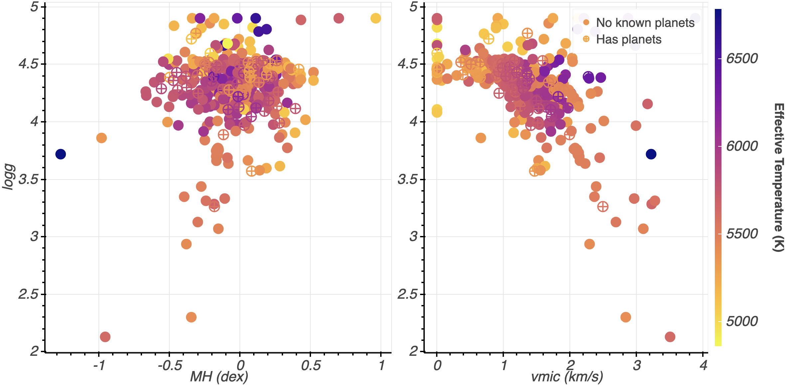

Stellar Atmospheres
I have previously worked on analyzing and exploring different analysis techniques of stellar spectra, using a sample of ~ 500 optical spectra observed with the Carnegie Planet Finder Spectrograph (PFS) at Magellan. The spectra are iodine-free "templates" used in traditional iodine-cell radial velocity observations, and are typically R ~120,000 and S/N >= 300. Specifically, we were interested in determining stars for future follow-up (ruling out sub-giants, characterizing stars in the sample with known exoplanets, and predicting which stars might be the optimal targets for RV follow-up observations). I compared computational analysis techniques (e.g. Empirical SpecMatch [Yee+ 2017] and ARES2 [Sousa+ 2015]) for determining physical characteristics and chemical abundances for the stars in the sample.
Additionally, I conducted observations with the PFS at Magellan as part of the Transiting Exoplanet Survey Satellite (TESS) follow-up program. This work involved me traveling to the observatory in Chile, where I helped to design and executed the observing program to collect data on stars TESS had identified as potentially hosting exoplanets. By taking high-resolution spectra with PFS of these candidate stars, the collaboration was able to identify and characterize several exoplanets (see e.g. Burt+ 2020, Dreizler+ 2020, Gan+ 2021).
Image: Plots of stars in the stellar sample of metallicity (MH) and velocity (vmic) versus surface gravity (logg). Color corresponds to the stars' effective temperatures. Stellar parameters determined with Empirical SpecMatch.